휴대폰으로도, PC로도 · 강사 채용 · 계약제 교원 채용
받은 링크나 QR
손가락으로 이름
줄·단추를 누르면 점수가 매겨져요
내면 고칠 수 없어요
로그인이 없어요. 담당 선생님이 보낸 링크가 곧 열쇠예요. 다른 사람에게 넘기지 마세요.
| 🅐 강사 채용 표준 | 🅑 계약제 교원 채용 표준 | |
|---|---|---|
| 전형 | 서류 → 면접 (또는 서류만) | 서류 → 면접 + 수업실연(같은 날) (또는 서류만) |
| 서약서 | 청렴서약서 | 임용심사위원 서약서 |
| 서류 채점 | 심사관점 줄 누르기 · 해당 줄 체크 · 자기소개서 점수 입력 | 준거 줄 누르기 · 점수 단추 누르기 |
| 면접 날 | 면접 채점표 하나 | 면접 · 수업실연 두 표를 차례로 |
01
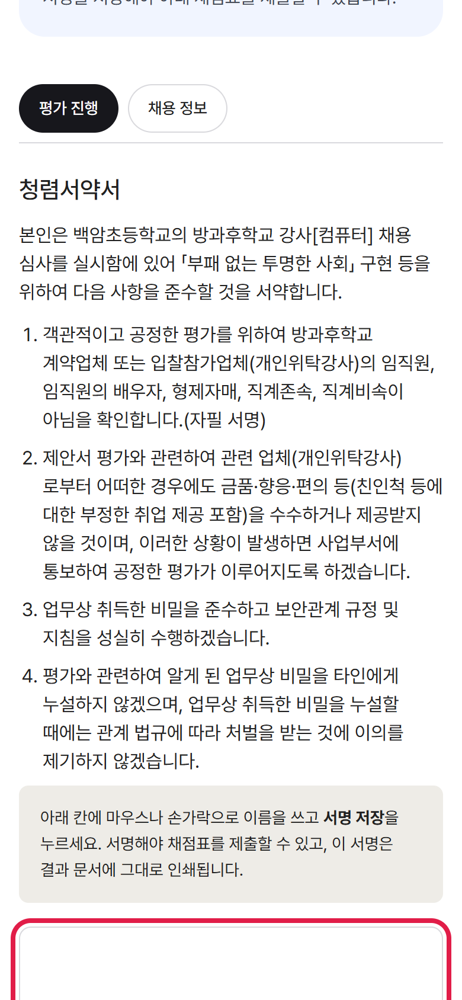
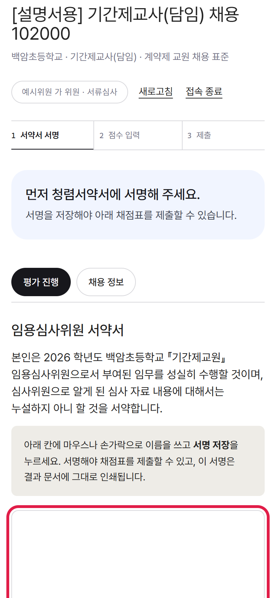
서약 내용을 읽고
아래 칸에 손가락으로 이름을 쓰세요.
PC에서는 마우스로 써요.
서명해야 채점표를 낼 수 있어요. 이 서명은 결과 문서에 그대로 인쇄돼요.
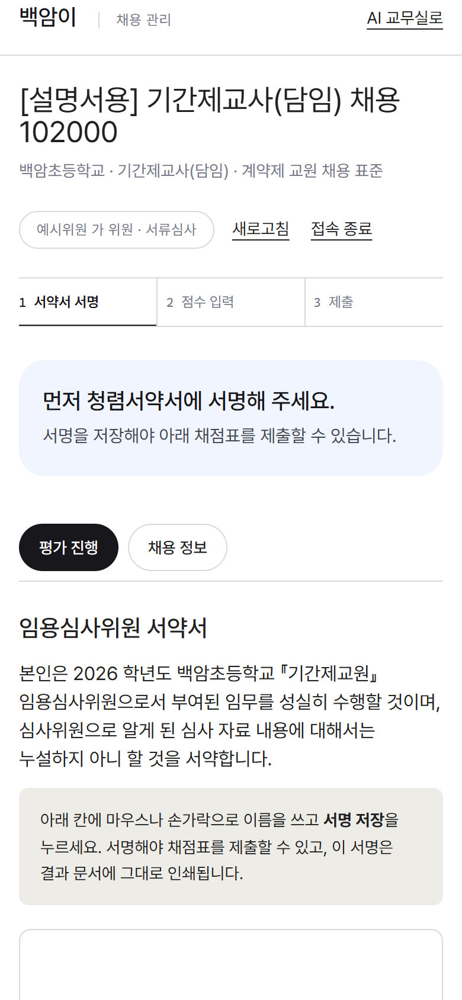
잘못 썼으면 「지우기」.
「서명 저장」을 누르면 서명 완료가 표시돼요.
나중에 「다시 서명」도 할 수 있어요.
02
드롭다운 없이 눌러서 골라요
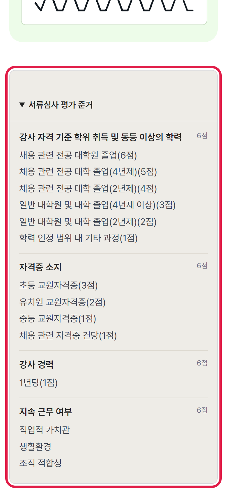
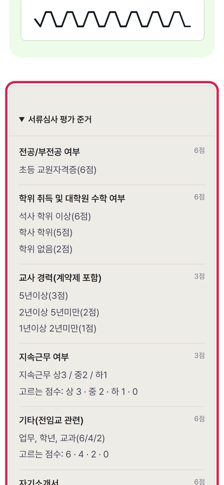
채점표 위에 항목별 기준과 배점이 펼쳐져 있어요.
모든 위원이 같은 기준을 봐요.
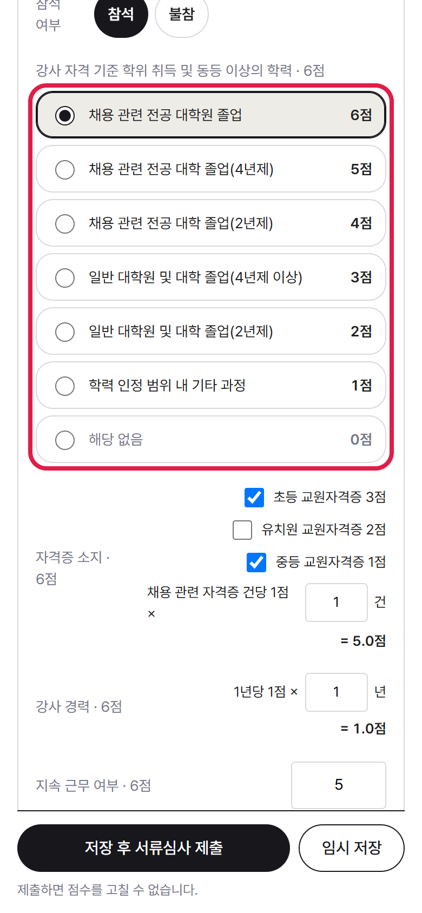
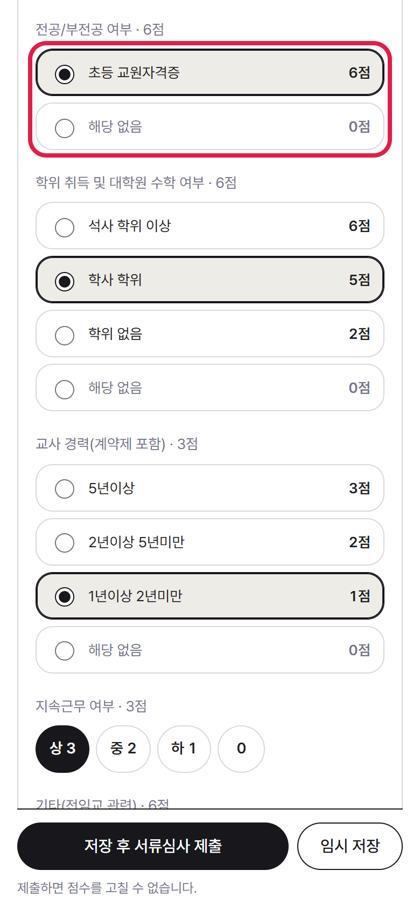
줄 누르기: 해당하는 한 줄(예: 석사 학위 이상 6점)
점수 단추: 6 5 4 … 중 하나
체크: 해당하는 줄 모두(🅐 자격증)
누르면 합계가 바로 계산돼요. 불참한 지원자는 「불참」을 누르고 메모에 사유를 적어요.
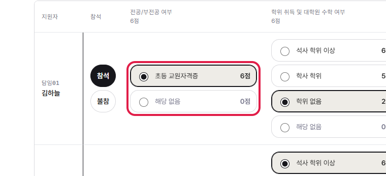
지원자가 한 줄씩, 항목이 옆으로 놓여요. 항목이 많으면 표를 좌우로 밀어서 보세요. 고르는 방법은 휴대폰과 같아요.
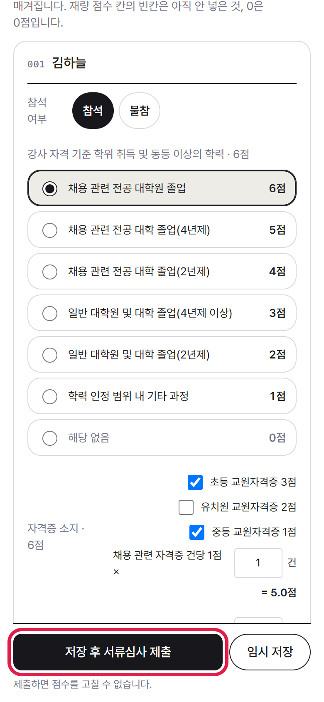
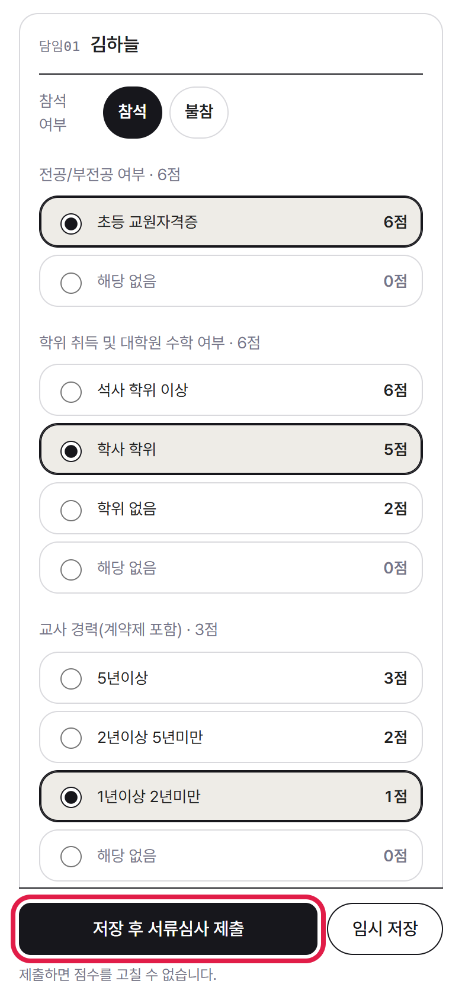
잠깐 멈출 땐 임시 저장.
다 됐으면 저장 후 … 제출.
빈칸이 있으면 제출이 안 돼요.
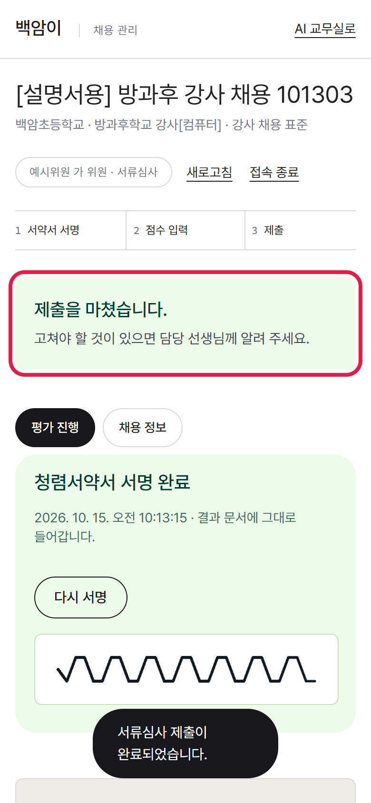
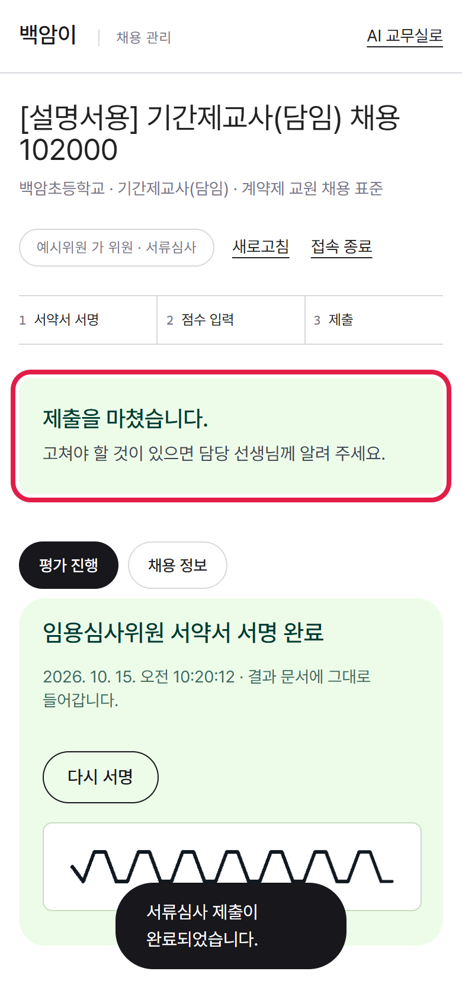
낸 점수는 잠겨요.
고칠 게 있으면 담당 선생님께 「다시 열기」를 부탁하세요.
03
같은 링크를 다시 열고 [새로고침]
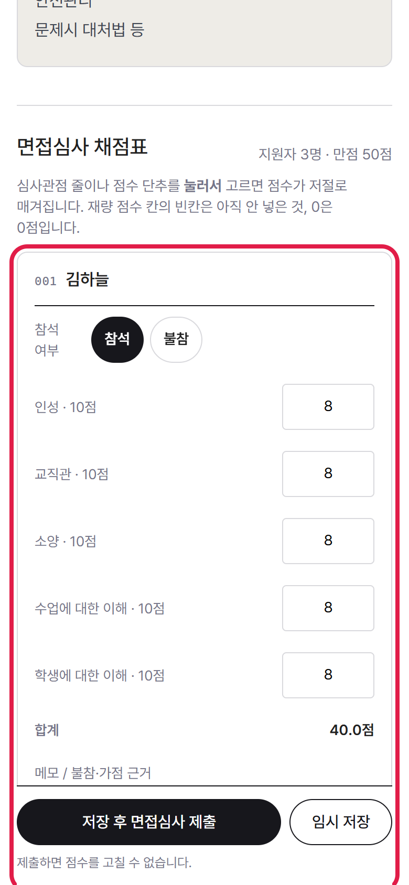
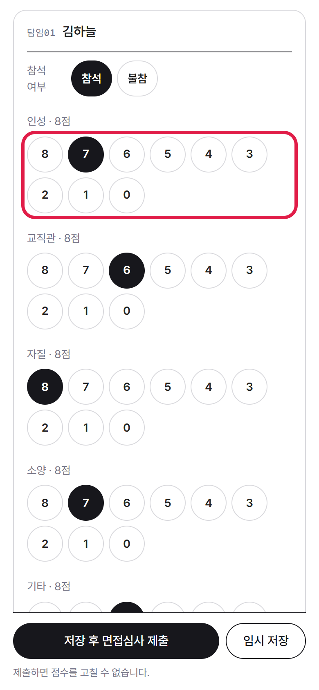
면접 대상자만 나와요.
🅐는 항목마다 점수를 숫자로, 🅑는 점수 단추를 눌러요.
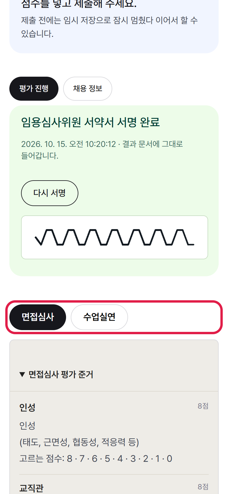
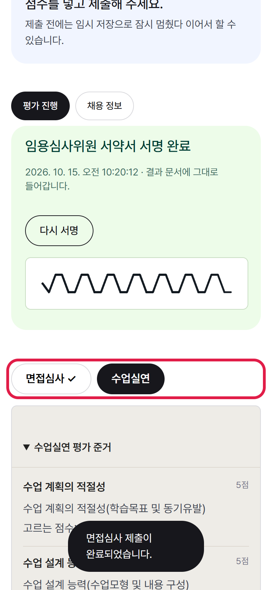
위쪽 면접심사 · 수업실연 단추로 오가요.
면접을 내면 수업실연 표로 저절로 넘어가요.
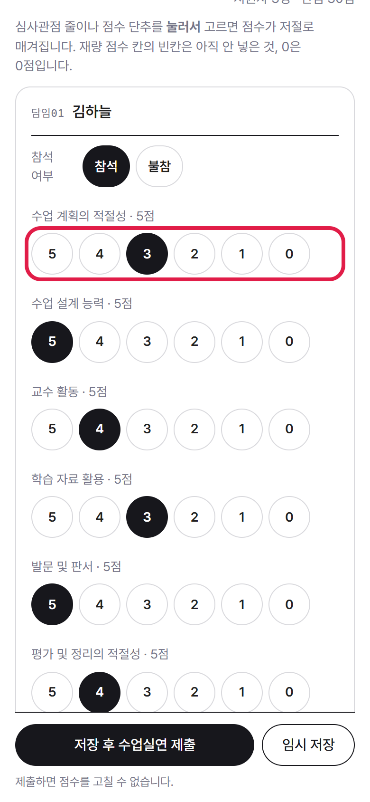
여섯 항목, 항목마다 5점.
다 내면 두 단추 모두 ✓ 가 붙어요.
04
남에게 넘기면 그 사람이 위원님 이름으로 채점할 수 있어요.
고칠 게 있으면 담당 선생님께 다시 열어 달라고 하세요.
지원자가 오지 않았으면 「불참」을 누르고 메모에 사유를 적어요.
감사합니다